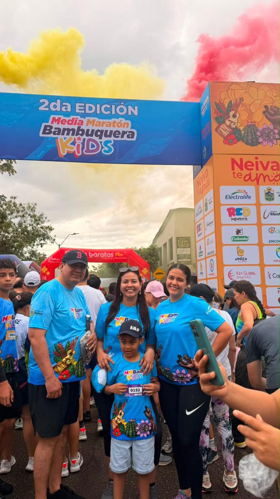

Neiva, Huila · educación · comunidad
Campaña de Navidad: regala oportunidades
Acompañamos procesos educativos y sociales
Amigos Como Arroz
Impulsamos a niños, jóvenes y familias con programas de educación, liderazgo, bienestar psicosocial y comunidad para construir proyectos de vida con esperanza.
19 años acompañando procesos
4.200+ participantes beneficiados
65+ aliados e instituciones
Actividades extracurriculares
Talentos que crecen fuera del aula.
Espacios formativos donde el deporte, el arte, la tecnología y los idiomas fortalecen disciplina, confianza y trabajo en equipo.


19 años
acompañando procesos educativos y sociales.
Fundación
Educación que transforma vidas.
Trabajamos con niños, jóvenes y familias mediante programas que fortalecen el aprendizaje, el liderazgo, la permanencia educativa y el bienestar psicosocial.
- Apoyo pedagógico y social para niños, jóvenes y familias.
- Programas culturales, deportivos, productivos y educativos.
- Acompañamiento integral para construir proyectos de vida.
Sembrando esperanza, cosechando futuro.
Nuestra historia
Sembrando esperanza, cosechando futuro.
Un origen con propósito
La Fundación Amigos Como Arroz nació en septiembre de 2007 como una expresión del compromiso social de la Organización Roa Florhuila con las comunidades de sus zonas de influencia.
Su creación representó la materialización de una visión profundamente humana: entender que el crecimiento empresarial también debe traducirse en oportunidades, bienestar y transformación para las personas.
El legado que inspira
Esta obra social está inspirada en el legado de don Aníbal Roa Villamil (Q.E.P.D.) y de su esposa, doña Clara Inés Solano de Roa.
Desde su liderazgo empresarial promovieron una filosofía basada en el trabajo, la solidaridad, la responsabilidad social y el servicio a la comunidad.
Acompañar para transformar
Desde sus inicios, la fundación ha trabajado por el bienestar de niños, niñas, adolescentes, jóvenes y familias en condición de vulnerabilidad.
A través de procesos educativos, formación integral, acompañamiento psicosocial, fortalecimiento de valores, actividades culturales, deportivas y oportunidades de acceso a la educación superior, ha contribuido a construir proyectos de vida con mayor esperanza y dignidad.
Semilla, Siembra y Cosecha
Sus programas reflejan la esencia de su misión: Semilla promueve el desarrollo integral y la ocupación productiva del tiempo libre.
Siembra abre caminos hacia la educación superior mediante becas y oportunidades de formación; y Cosecha fortalece el liderazgo social de los jóvenes beneficiarios, motivándolos a devolver a la comunidad parte de lo aprendido.
Una cosecha comunitaria
A lo largo de los años, la fundación ha trascendido la asistencia social para consolidarse como un modelo de transformación comunitaria.
Cada beca otorgada, cada proceso formativo, cada familia acompañada y cada historia de superación representan una cosecha del legado sembrado por sus fundadores.
La razón de ser
Así como una semilla necesita cuidado para convertirse en fruto, cada niño y cada joven necesitan oportunidades para alcanzar su máximo potencial. Esa ha sido, y seguirá siendo, la razón de ser de la Fundación Amigos Como Arroz: sembrar esperanza para cosechar futuro.
Página 1 de 7
Sede Espinal
01
Formación
02
Comunidad
Conoce más de nosotros
Un nuevo punto de encuentro para acompañar más vidas.
La sede Espinal fortalece la presencia de la fundación y acerca nuestros procesos educativos, sociales y comunitarios a más niños, jóvenes y familias.
Espacios para aprendizaje, actividades extracurriculares y desarrollo de talentos.
Acompañamiento cercano para familias, voluntarios, aliados y beneficiarios.
Programas
Acompañamiento para cada etapa.
Organizamos nuestro trabajo en programas que promueven educación, liderazgo y bienestar.
Semilla
Para niños, niñas y familiasFormación deportiva, cultural y productiva para fortalecer talentos, valores y uso sano del tiempo libre.
Más información →Siembra
Becas y acompañamiento para acceder a educación superior técnica, tecnológica o profesional de excelente calidad.
Más información →Cosecha
Para líderes comunitariosLiderazgo juvenil y proyectos sociales para servir, participar y generar impacto en la comunidad.
Más información →Acompañamiento Psicosocial
Para familias y beneficiariosEje transversal que apoya el sano desarrollo de beneficiarios y familias en su proyecto de vida.
Más información →
Impacto
Resultados que transforman.
Cada actividad, beca, taller o encuentro representa una oportunidad para fortalecer habilidades, confianza y comunidad.
0
participantes beneficiados por programas educativos y sociales.
0
voluntarios y mentores activos.
0
aliados e instituciones.
0
proyectos comunitarios realizados.
0
% de permanencia en los procesos.
Testimonios
Historias que se quedan.
A veces el cambio empieza con una clase, una conversación o alguien que decide creer contigo.
Historia 01
Una voz que habla desde la experiencia.
Momentos reales de acompañamiento, confianza y transformación.
Historia 02
Cuando alguien cree contigo, algo empieza a cambiar.
Testimonios que muestran el valor humano detrás de cada proceso.
Confianza
Acompañamiento
Esperanza
Mejores momentos
Momentos que nos unen.
Un espacio para destacar los momentos que marcaron nuestro año: actividades, celebraciones, talleres, entregas, logros y encuentros con la comunidad.
Febrero 2026
Inicio comunitario
Apertura del año con actividades educativas, recreativas y culturales para motivar la participación de niños, jóvenes y familias.

Mayo 2026
Formación y liderazgo
Espacios para fortalecer habilidades socioemocionales, trabajo en equipo, comunicación y proyecto de vida.

Junio 2026
Cultura y familia
Un momento para celebrar el talento, la cultura y la unión familiar como parte esencial del acompañamiento social.

Diciembre 2026
Cierre y logros
Celebración de aprendizajes, permanencia, liderazgo y compromiso de los participantes, voluntarios, familias y aliados.

Nuestro equipo
El equipo de la misión.
Personas que lideran, coordinan y acompañan los procesos educativos, sociales y comunitarios de la fundación.
Directora
Moira Quintero
Lidera la visión institucional, el crecimiento de la fundación y el relacionamiento estratégico.
Coordinación
Coordinación de programas
Coordina las actividades educativas, la planeación y el seguimiento de cada programa.
 Acompañamiento
Acompañamiento
Andrés Cabrera
Impulsa el bienestar emocional, el acompañamiento familiar y el enfoque psicosocial.
 Voluntariado
Voluntariado
Caren González
Comprometida con una gestión sostenible que transforme recursos en impacto social.
Videos
Historias en video
Un espacio visual para mostrar testimonios, eventos y momentos reales de la fundación.
Conoce nuestra misión
Una pieza institucional para presentar quiénes somos, qué nos mueve y por qué acompañamos a la comunidad.
Momentos de impacto
Espacio ideal para eventos, testimonios y publicaciones que den más confianza.
Contáctanos
Sé parte de la misión.
Escríbenos, haz una donación, únete como voluntario o conviértete en aliado estratégico. Cada contribución transforma vidas.
-
Ubicación Carrera 7A No. 16-25, barrio Quirinal · Neiva, Huila
-
WhatsApp +57 318 707 3308
-
Correo amigoscomoarroz@gmail.com
Contacto directo
Envíanos tu mensaje
Cuéntanos cómo quieres apoyar o recibir información. Te responderemos de forma cercana y clara.
Transparencia
Informes y documentos.
Un espacio para consultar los avances, resultados, aprendizajes y documentos institucionales de la fundación.
2025
Más reciente
Informe de gestión 2025
Resultados, alianzas, programas e impacto social del año en curso.
2024
Histórico
Informe de gestión 2024
Actividades, beneficiarios, proyectos y gestión institucional del periodo.
5245
Documento legal
PRESENTACION 5245
Formulario 5245 – Presentación - calificación en el régimen tributario especial año 2025